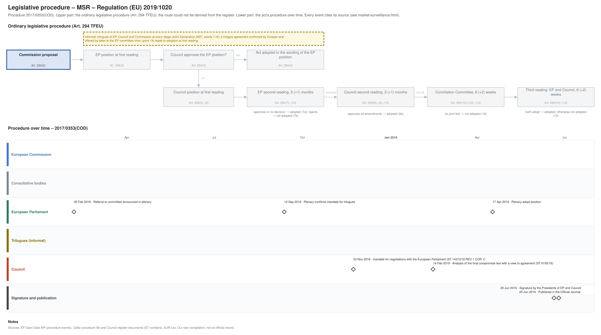

← All procedures · Regulation timeline
Procedure 2017/0353(COD), completed. Drawing: SVG · PNG · PDF (A3) · draw.io · Page as Markdown: market-surveillance.md
| Stage | Completed, published 25 Jun 2019 |
|---|---|
| Latest activity | 25 Jun 2019 · Signature and publication: Published in the Official Journal |

| Date | Actor | Event | Document | Source |
|---|---|---|---|---|
| 2018-02-05 | European Parliament | Referral to committee announced in plenary | EP Open Data API, procedure 2017-0353 (REFERRAL) | |
| 2018-09-12 | European Parliament | Plenary confirms mandate for trilogues | EP Open Data API, procedure 2017-0353 (PLENARY_ENDORSE_COMMITTEE_INTERINSTITUTIONAL_NEGOTIATIONS) | |
| 2018-11-23 | Council | mandate for negotiations with the European Parliament | ST 14313/18 REV 1 COR 1 | Cellar procedure file 2017/353 (Council register) |
| 2019-02-14 | Council | Analysis of the final compromise text with a view to agreement | ST 6155/19 | Cellar procedure file 2017/353 (Council register) |
| 2019-04-17 | European Parliament | Plenary adopt position | EP Open Data API, procedure 2017-0353 (PLENARY_ADOPT_POSITION) | |
| 2019-06-20 | Signature and publication | Signature by the Presidents of EP and Council | EP Open Data API, procedure 2017-0353 (SIGNATURE) | |
| 2019-06-25 | Signature and publication | Published in the Official Journal | EP Open Data API, procedure 2017-0353 (PUBLICATION_OFFICIAL_JOURNAL) |
| Date | Document | Kind | Subject |
|---|---|---|---|
| 2018-09-06 | A8-0277/2018 | ep-report | REPORT on the proposal for a regulation of the European Parliament and of the Council laying down rules and procedures for compliance with and enforcement of … |
| 2018-11-23 | ST 14313/18 REV 1 COR 1 | council-position | mandate for negotiations with the European Parliament |
| 2019-02-14 | ST 6155/19 | agreed-text | Analysis of the final compromise text with a view to agreement |
{kind=link}
{kind=link}